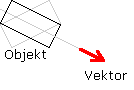

Hilfe
AlignToVector

Aufruf
Parameter
Rückgabewert
Beschreibung
Beispiel
Siehe auch
AlignToVector entity%, x#, y#, z#, achse% [, tempo#]
Parameter
| entity% | Identität eines Objekts (entity) |
| x# | Relative X-Koordinate |
| y# | Relative Y-Koordinate |
| z# | Relative Z-Koordinate |
| achse% | Nummer der Achse (1=X, 2=Y, 3=Z) |
| tempo% | Wert zwischen 0 und 1 (1=Standard). Bei 1 wird es sofort auf den Vector ausgerichet. Bei kleinerem Wert wird es schrittweise zu dem Vector gedreht. |
Rückgabewert
-
Beschreibung
Die Anweisung AlignToVector richtet eine Objekt-Achse entlang eines Vektors aus. Dazu wird die Identität des Objekts angegeben und die drei Komponenten des Vektors. Danach wird die Achse des Objekts angegeben. Diese Angaben reichen aus, um ein Objekt auszurichten.
Der optionale Parameter "tempo#" gibt die Geschwindigkeit der Drehung an. Bei 1 wird es sofort auf den Vector gedreht. Bei kleinerem Wert ist die Bewegung glatter.

Beispiel
Standardbeispiel:
Graphics3D 640, 480, 16, 2
SetBuffer BackBuffer()
camera = CreateCamera()
light = CreateLight()
PositionEntity camera, 0, 0, - 5
RotateEntity light, 90, 0, 0
cylinder = CreateCylinder(20)
sphere = CreateSphere()
ScaleEntity cylinder, 1, 3, 1
PositionEntity cylinder, 0, 0, 5
EntityAlpha sphere, .8
EntityColor sphere, 255, 100, 100
While Not KeyHit(1)
If KeyDown(200) Then MoveEntity sphere, 0, .1, 0
If KeyDown(208) Then MoveEntity sphere, 0, - .1, 0
If KeyDown(203) Then MoveEntity sphere, - .1, 0, 0
If KeyDown(205) Then MoveEntity sphere, .1, 0, 0
AlignToVector cylinder, EntityX(sphere), EntityY(sphere), - 5, 2
RenderWorld
Flip
Wend
End
SetBuffer BackBuffer()
camera = CreateCamera()
light = CreateLight()
PositionEntity camera, 0, 0, - 5
RotateEntity light, 90, 0, 0
cylinder = CreateCylinder(20)
sphere = CreateSphere()
ScaleEntity cylinder, 1, 3, 1
PositionEntity cylinder, 0, 0, 5
EntityAlpha sphere, .8
EntityColor sphere, 255, 100, 100
While Not KeyHit(1)
If KeyDown(200) Then MoveEntity sphere, 0, .1, 0
If KeyDown(208) Then MoveEntity sphere, 0, - .1, 0
If KeyDown(203) Then MoveEntity sphere, - .1, 0, 0
If KeyDown(205) Then MoveEntity sphere, .1, 0, 0
AlignToVector cylinder, EntityX(sphere), EntityY(sphere), - 5, 2
RenderWorld
Flip
Wend
End
Siehe auch